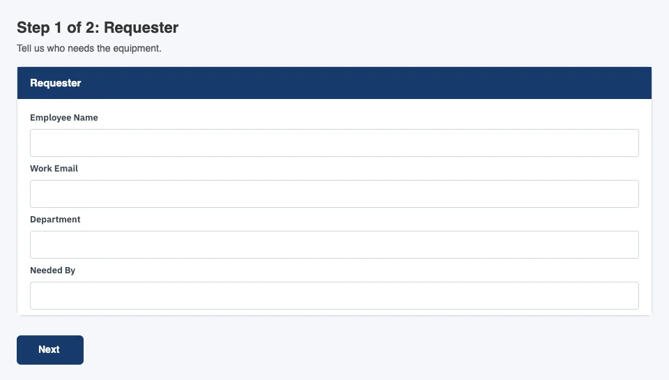
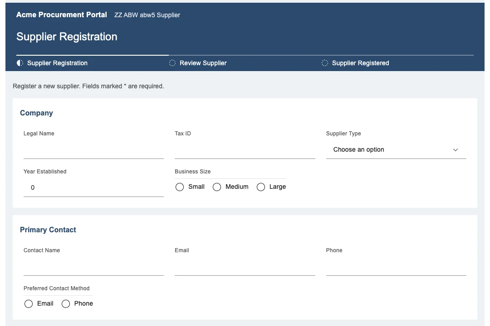
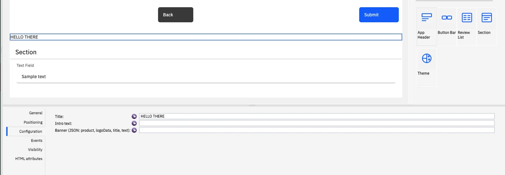
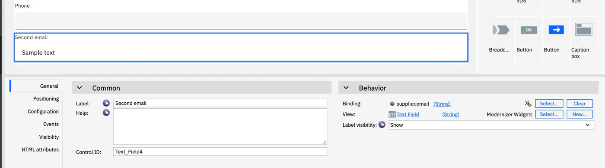

IBM Bob × BAW Dev Tools MCP · test run
Coaches you can rearrange.
A 75-minute test of the widget toolkits. Bob builds a small app from App Builder Widgets and modernizes ZZQI with Modernizer Widgets, installing each toolkit before the app. Then you drag, drop and relabel them in Coach Designer.



T−15
Before you start.
Make Bob build both toolkits fresh, keep a copy of ZZQI's spec, and restart the connector so it shows the new tool.
Bob reuses the newest installed toolkit snapshot whose.twxis inwork/. MDW 1.0.0 is installed andwork/MDW-1.0.0.twxis an early test build, so move it.
- Check out
feat/coach-widget-toolkits. In Bob's MCP panel, restart baw-dev-tools: it shows 15 tools, the new one isbuild_widget_toolkit. - Move the old toolkit file aside.
work/has noABW-*.twx, so App Builder Widgets are built fresh too.Terminal mkdir -p work/old && mv work/MDW-1.0.0.twx work/old/ - Back up ZZQI's coach spec:
inspect_coachesrewrites it, and it holds the hand-written screen setup.Terminal cp work/ZZQI-v1.0.coaches.json work/old/ - Names already taken: ABW 1.0.0–1.0.3; MDW 0.0.1–0.0.6 and 1.0.0–1.5.0. An “already exists” refusal is a safety rule working.
- Pick 🏗️ BAW App Builder, allow Mode in Bob's auto-approve settings, and open Business Automation Studio in a second tab.
03:00 08:00
Two toolkits, installed once per server.
Every coach is now a layout of small widgets. They ship as BAW toolkits, the way BAW shares views between process apps.2
- 15
- tools, with
build_widget_toolkit - 2
- toolkits
- 16
- widgets in the palette
- 1
- install per server
App Builder Widgets ABW | Theme, App Header, Section, Review List, Button Bar. Plain BAW markup, no framework; the fields inside stay UI Toolkit views. |
|---|---|
Modernizer Widgets MDW | Theme, Header, Error Summary, Text Field, Text Area, Number Field, Date Field, Checkbox, Select, Radio Group, Button. React + Carbon.5 |
Bob decides Is a toolkit snapshot installed whose .twx is in work/? Yes: pass it as toolkit_snapshot. No: build_widget_toolkit, install_app, then the app.
“An app depends on one snapshot of a toolkit and keeps it. A newer snapshot shows in Designer as an upgrade.”1
08:00 35:00
Test 1. App Builder Widgets.
A small app from a request. The toolkit must be installed before the app.
Build a small ZZ app for an office supply request. One step with two sections: Requester (name and work email) and Item (item, quantity and needed-by date), then a review screen. Navy header, white text, rounded buttons, "Office Supplies" as the product name. Install it and test it.list_snapshots("ABW")build_widget_toolkit("builder")install_apptoolkitcreate_apptoolkit_snapshotinstall_appapptest_service
toolkit first Bob asks you
Do Paste request 1. When Bob stops, read its design and answer “Approved.”
Bob does Picks an unused acronym, writes the theme file and the app spec, then stops to show the design.
Check The design has one step with the Requester and Item sections, and a review screen.
Bob does list_snapshots("ABW") finds 1.0.0–1.0.3, none with its .twx in work/. So it calls build_widget_toolkit("builder", …) with a new name and asks before install_app on the toolkit. Answer yes. Only then create_app, with toolkit_snapshot.
Check No create_app before the toolkit is installed. If Bob tries, create_app refuses with “pass toolkit_snapshot” or “is not installed on the server”, and Bob must recover by itself.
“The toolkit goes in once. Every app on this server can use it from now on.”
Bob does inspect_coaches, then asks whether to import the app. Answer yes. Then install_app, test_service with sample values, and a report with the run URL and screenshots.
Check test_service reports "ok": true. The screenshots show the classic look: navy header, two section bars, the buttons.
- Open the app in Designer, its client-side human service, the Coaches tab, the first coach.
- Palette: Theme, App Header, Section, Review List, Button Bar, each with its icon.
- Drag Needed By from the Item section into Requester, under Work Email.
- Relabel the Item section in General to “What you need”. The canvas follows at once.3
- Change the App Header's Title in Configuration. The canvas follows.
- Save, then Run. The form shows all three changes.4
Designer edits are not in Bob's app spec. If Bob builds the app again, the new snapshot does not have them, so edit after Bob is done.
35:00 65:00
Test 2. Modernizer Widgets on ZZQI.
Same chat. Bob switches mode, plans, then installs the toolkit before ZZQI's new snapshot.
Modernize the ZZQI app, starting from its snapshot v1.0. Build every coach from Modernizer Widgets, with no hand-written screens, so I can rearrange them in Coach Designer. Keep the ZZQI theme file. Show me the plan before you build.Approved. Build it, install it and test it.list_snapshots("MDW")build_widget_toolkit("modernizer")install_apptoolkitmodernize_apptoolkit_snapshotinstall_appZZQItest_service
Bob does Switches to ✨ BAW Coach Modernizer by itself. export_app ZZQI v1.0, inspect_coaches, improves the spec with no "screen" on any coach, then stops to show the plan. It says it did not create ZZQI in this task, so it adds a snapshot only after you approve.
Check All six coaches are built from widgets: Benefit Funding, Enrollment and Dependents, Rewards, Waivers and Credits, Review Quote Info, Quote Submitted.
Bob does With MDW-1.0.0.twx moved, no installed MDW snapshot has its file, so it builds a new one and asks before installing it. Then modernize_app with toolkit_snapshot, asks before installing ZZQI, and runs test_service on Quote Info (Modernized).
Check "ok": true for Quote Info (Modernized). The legacy Quote Info service is still there, unchanged.
- Open ZZQI in Designer, Quote Info (Modernized), the Coaches tab, Benefit Funding.
- Palette: the eleven Modernizer Widgets. Canvas: the Header with its steps, a Panel per section, the buttons in Actions.
- Select a field. General shows Label, Help, Binding; View reads Text Field, from Modernizer Widgets.
- Relabel it, then drag it to another place or Panel. The canvas follows.

- Pick a field that is not required. In Visibility, set it to Required.6
- Save, then Run.
- Leave the field empty and press the forward button: the Error Summary lists it, the field shows its error, and the coach stays.
- Fill it in and press again: the coach moves on.
“Required, read-only and hidden are BAW's own settings. The widget follows them at run time.”
65:00
The scorecard.
Tick each check as it passes. The page remembers them; copy the results when you are done.
checks passed
| Bob shows 14 tools | The old server process runs. Restart baw-dev-tools in Bob's MCP panel. |
|---|---|
| “Snapshot … already exists in ABW / MDW” | A safety rule. Bob picks the next name by itself. |
create_app: “pass toolkit_snapshot” | Bob skipped the toolkit. Fail check 1, and let Bob recover. |
| “… is not installed on the server” | The toolkit was built but not installed. Bob should install_app it first. |
| Bob reuses MDW 1.0.0 | work/MDW-1.0.0.twx is still in work/. Move it, then ask again with a new ZZQI snapshot. |
| Install succeeds, the palette has no widgets | BAW can skip a package silently. Send me the toolkit and snapshot names. |
| Blank boxes on the canvas | Reload Designer. If they stay blank, send a screenshot. |
| Run does not show your edit | Save first; Run only shows saved changes. |
test_service: “detached frame” | A known flake. Ask Bob to run the test again. |
- The scorecard (Copy results), with a note for every failed check.
- Bob's tool calls in order, from the toolkit check to the last test.
- The snapshot names: ABW, MDW, the new app and ZZQI.
- A screenshot of each palette and of each Designer edit.
- To get ZZQI's hand-written screens back:
Terminal cp work/old/ZZQI-v1.0.coaches.json work/